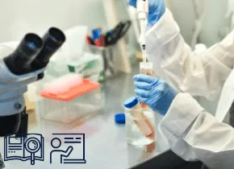

פרויקטי הגמר של הפקולטה מבוצעים במעבדות הפקולטה במסגרת הקורסים פרויקט א’ 044167 ופרויקט ב’ 044169 (קורסי חובה) ופרויקט מיוחד 044170 (קורס בחירה). הסילבוס של מקצועות אלה זהה למעט הדרכות כלליות והרצאות העשרה שנכללות רק בפרויקט הראשון (פרויקט א’).
הרישום לקורסי הפרויקטים נעשה כמו ביתר הקורסים עצמאית על ידי הסטודנטים, בחירת המעבדה והפרויקט הספציפי נעשים לפי רשימת הצעות פרויקטים שמתפרסמת מעת לעת באתר labadmin על ידי צוותי המעבדות, הרישום לפרויקט ספציפי נעשה על ידי המהנדס האחראי של המעבדה בה הפרויקט מבוצע.
קישורים
רשימת מעבדות התמחות בהם ניתן לבצע פרויקט גמר
המעבדה לבקרה רובוטיקה ולמידה חישובית CRML
אחראי אקדמי: פרופ’ שי מנור
מרכז פעילות ההוראה: קובי כוחיי
מיקום: בנין פישבך, קומה 3 321-328

המעבדה לגרפיקה ממוחשבת CGM
אחראי אקדמי: פרופ’ איילת טל
מרכז פעילות ההוראה: חובב גזית
מיקום: בנין מאייר, קומה 10, חדר 1011

המעבדה לחקר רשתות ביולוגיות BNRL
אחראי אקדמי: פרופ’ רון מאיר
מרכז פעילות ההוראה: יעל אבוחצירה
מיקום: בנין פישבך, קומה 4, חדר 432

המעבדה למערכות מקביליות PSL
אחראי אקדמי: פרופ’ צחי בירק
מרכז פעילות ההוראה: עוז שמואלי
מיקום: בניין מאייר, קומה 12, חדרים 1237-1242

המעבדה למערכות ספרתיות מהירות HSDSL
אחראי אקדמי: פרופ’ צחי בירק
מרכז פעילות ההוראה: מוני אורבך
מיקום: בנין פישבך, קומה 3, חדר 352

המעבדה למערכות תוכנה מרושתות NSSL
אחראי אקדמי: פרופ’ איתי אייל
מרכז פעילות ההוראה: חובב גזית
מיקום: בניין מאייר, קומה 11, חדרים 1142-1143

המעבדה לעיבוד אותות ותמונות SIPL
אחראי אקדמי: פרופ’ ישראל כהן
מרכז פעילות ההוראה: יאיר משה
מיקום: בניין מאייר, קומה 5 , חדרים 515, 519

המעבדה לראייה ומדעי התמונה VISL
אחראי אקדמי: פרופ’ גיא גלבוע
מרכז פעילות ההוראה: יוחנן ארז
מיקום: בנין מאייר, קומה 6 611-618

המעבדה לתקשורת COMM
אחראי אקדמי: פרופ’ עמנואל כהן
מרכז פעילות ההוראה: דניס דיקרוב
מיקום: בניין מאייר, קומה 5 חדרים 561,566,569

המעבדה ל-VLSI
אחראי אקדמי: פרופ’ רן גינוסר
מרכז פעילות ההוראה: רותם בן חור
מיקום: בניין מאייר קומה 7, 711-718

המעבדה ל – PEARL
אחראי אקדמי: פרופ’ יואש לברון
מרכז פעילות ההוראה: אריק הרבלין
מיקום: בניין פישבך, קומה 3, 304